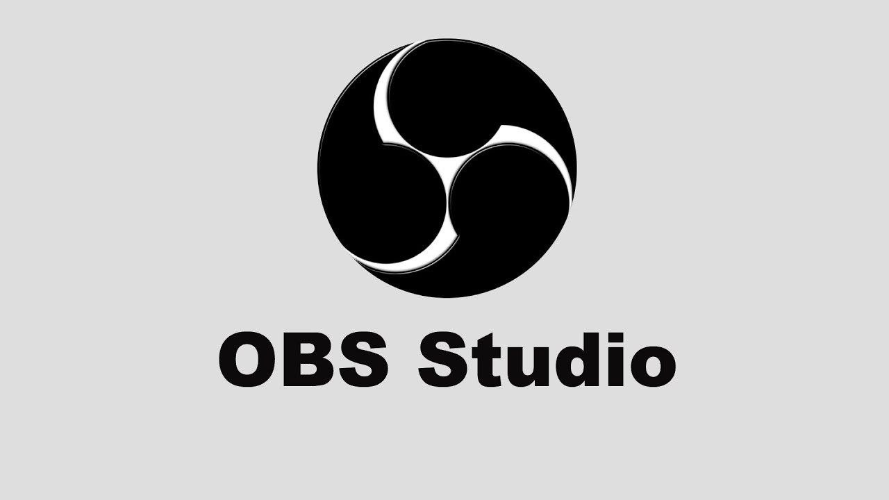

Скачай
оффлайн-версию
работает без интернета.
SAS Planet v.200606
VLC Player v.3.0.21
EdgeTX Flasher
ExpressLRS Configurator v.1.7.7
Zadig v.2.9
BetaFlight v.10.10.0
ImpulseRC
STM32 Virtual COM Port Driver
INAV Configurator
STM32 DFU
Edge TX Companion v.2.10.3
PID Tool Box Pro
TBS Agent v.4
DJI Battery Killer
RadioPlanner
Advanced Password Generation
OBS Studio
CapCut
Программы для Windows
Список сформирован из темы
Программы для ПК
Источник темы
ТЭЧ БпЛА | FPV
OBS Studio
Из темы
Программы для ПК
Из источника
ТЭЧ БпЛА | FPV
OBS Studio
Файл
OBS-Studio-31.1.0-Windows-x64-Installer.exe
Файл
OBS-Studio-31.1.0-Windows-x64-Installer.exe
Это вложение из поста
t.me/techuav/20605/22432

OBS Studio Программа для осуществления трансляции и записи экрана.
При поддержке
@xronikabpla
Веб-страница создана автоматически на основе
поста
пользователя
ТЭЧ БпЛА | FPV